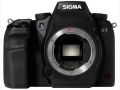
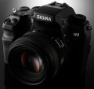
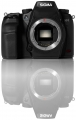
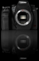

器材库 > APS及其以下画幅可换镜头数码相机 > SD1

规格总览
产品类型
APS画幅可换镜头数码相机
发布日期
2010-09-21
影像规格
影像传感器
Foveon X3
影像传感器尺寸
24×16mm
有效像素
4600万
影像处理器
双TRUE II（Three-layer Responsive Ultimate Engine）影像处理芯片
画幅比
3:2
镜头和对焦
镜头卡口
Sigma SA
兼容镜头
Sigma SA卡口镜头
对焦系统类型
TTL相位检测
对焦点
11点
对焦模式
S-AF / C-AF / MF
自动对焦点选择
自动, 手动
所选自动对焦点显示
显示于取景器内
手动对焦
支持
闪光灯
内置闪光灯
弹出式
闪光指数
GN 11
闪光补偿
±3EV以1/3EV级调整
外接闪光灯
EF-610 DG SUPER, EF-610 DG ST, EM-140DG
取景器/显示屏
取景器
五棱镜取景器
取景范围
98%
取景放大倍率
0.95倍
屈光度调节范围
-3.0 ~ +1.5
反光镜
快速瞬回半透明
景深预视
有
LCD类型
彩色TFT LCD
LCD尺寸
3.0英寸
LCD像素
46万
视野率
100%
文件输入/输出
存储卡
CF
机身规格
颜色
黑色
尺寸
145.5×112.5×80mm
其它
配件端口
热靴
备注
全天候防尘防水
drlyly752017-05-14 16:294.25 分
操作性 4.00功能性 4.50美观性 4.50趣味性 4.00耐用性 4.00性价比 4.00解像力 4.50色彩还原 4.50
wmf1132013-03-28 14:314.31 分
操作性 3.50功能性 4.00美观性 4.00趣味性 5.00耐用性 4.50性价比 3.50解像力 5.00色彩还原 5.00
nidanzi0012012-03-12 22:393.44 分
操作性 3.00功能性 3.00美观性 3.00趣味性 3.00耐用性 3.00性价比 2.50解像力 5.00色彩还原 5.00
gg889r2012-03-01 12:053.75 分
操作性 4.50功能性 3.00美观性 4.00趣味性 3.00耐用性 4.00性价比 2.50解像力 4.50色彩还原 4.50
bohn2011-08-24 06:403.88 分
操作性 4.00功能性 4.00美观性 4.50趣味性 4.00耐用性 4.50性价比 1.50解像力 4.00色彩还原 4.50
JHSD2011-01-09 10:32
沉默奥林帕斯2010-10-08 09:41
若农2010-09-26 19:024.06 分
操作性 3.50功能性 4.00美观性 3.50趣味性 3.50耐用性 3.50性价比 4.50解像力 5.00色彩还原 5.00
再学习2010-09-22 21:254.69 分
操作性 4.50功能性 4.50美观性 4.50趣味性 4.50耐用性 5.00性价比 4.50解像力 5.00色彩还原 5.00
产品图 / 样片
SD1

SD1

SD1

SD1
评测 / 相关文章
该产品暂无存档的评测文章
相关文章
- ［资讯］SIGMA Photo Pro 5.4.1软件提供下载 （存档）
- ［资讯］经典“Foveon蓝”再现 适马SPP海外测试 （存档）
- ［资讯］适马公布SD1 Merrill/SD1最新固件 （存档）
- ［资讯］适马SPP更新至5.4版本 （存档）
- ［资讯］适马SD1、SD1M固件再次升级 （存档）
- ［资讯］适马发布SIGMA Photo Pro 5.3.1 （存档）
- ［资讯］适马再次升级SD1和SD1 Merrill固件 （存档）
- ［资讯］适马公布SD1和SD1 Merrill的最新固件 （原站已下线）
- ［试用］【马帮兵器谱】SD1圣经一 德瑞奥试机 （原站已下线）
- ［资讯］适马公布SD1最新固件ver 1.05 （原站已下线）
- ［资讯］老机换新颜 适马推出sdQ相机以旧换新活动 （存档）
- ［资讯］修正红色溢出 适马更新Photo Pro软件 （存档）